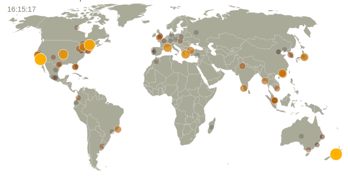
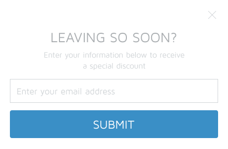
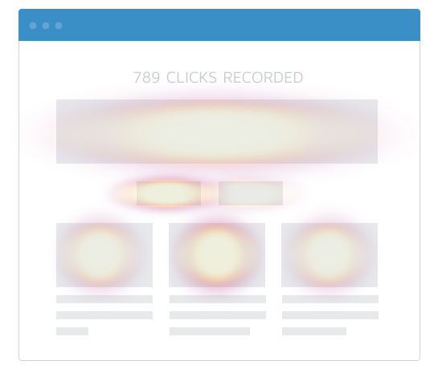
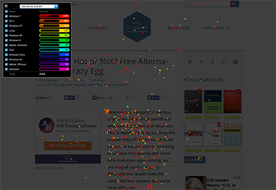

Web-basierte Anwendungen 1 2015
Usertracking
12.11.2015
Studiengang Medieninformatik an der Technischen Hochschule Köln
Campus Gummersbach
Aziz Cetiner
Aaron Asgharzadeh
Ziele für den heutigen Workshop
- Ein grundlegendes Verständniss von Usertracking schaffen
- Praktischer Umgang mit Usertracking
Übersicht
- Was ist Usertracking?
- Wie funktioniert es?
- Welche Tools existieren?
- Vor- und Nachteile
- Datenschutz
Was ist Usertracking?
- Analyse von Benutzerverhalten
- Aus den gewonnenen Daten Rückschlüsse ziehen
- Optimierung der Website
Wie funktioniert es?
- IP Adresse
- HTTP Refferer
- Cookies/Tracking Script
Google Analytics
- Standart in der Webanalyse
- kostenfrei
- Bestes Tool für Seitenbesucher Informationen
Piwik
- Hosten auf eigenem Server
- Gute Alternative zu Google Analytics
- Real-time Visitor Map

SumoMe
- List Builder

- Heatmaps

crazyegg
- Erfolg durch Heatmap Tool
- Röntgenbrille
- Konfetti Tool

Chartbeat
- Fokus auf Social Media
- Einfache Interaktion mit Usern
- Besonders gut geeignet für Blogs/Newsseiten
Vor- und Nachteile
Vorteile:
- Website Optimierung
- Kundenzufriedenheit
Vor- und Nachteile
Nachteile:
Datenschutz
- Noch gibt es kein Gesetz was Usertracking klar verbietet
- USA sind schon etwas weiter
- Facebook Klage